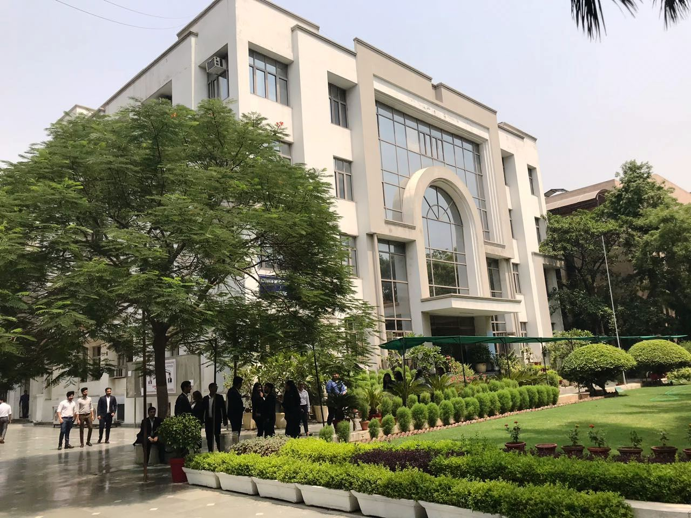

<div class="Acontainer mt-10">

	<div class="row pt-10">
		<div class="col-sm-9">
			<div class="page-title font-family-1 mt-10">About Us</div>
			<hr class="hr-maroon" />
			<p class="text-justify">
				
				Institute of Information Technology and Management (IITM) was set up in 1999 under the aegis of Mata Leelawati Shikshan Sansthan (MLSS), a registered education society engaged in various philanthropic activities, with Shri T.N. Chaturvedi - The well known Educationist, Parliamentarian, Ex-Governor of Karnataka and CAG of India and Padma Vibhushan Awardee as Founder President of both the Society and the Institute.
			</p>
			<p class="text-justify">
				The campus is located in serene pollution free salubrious surroundings in close proximity to Delhi Metro Rail.
			</p>
			<p class="text-justify">
				The Institute takes pride in having developed the faculty support and infrastructure imperative to effectively implement ‘Outcome Based Education’- a technology-based, learner centric and result-oriented approach which enhances students' learning and performance capabilities. We are passionate about grooming the nation’s youth to grow into good human beings and excellent professionals destined to become torch bearers of their respective domains.
			</p>
			<p class="text-justify">
				IITM conducts a plethora of short duration skill enhancement and syllabus enrichment workshops related to areas of management specialisations and emerging technologies. We have a strong alumni network of over 3000 professionals working at various management levels in the leading corporate houses of the country.
			</p>
		</div>
		<div class="col-sm-3">
			<div class="row">
	<div class="col-md-12">
		<div class="quick"><i class="fa fa-link"></i> Quick Links</div>
		<hr class="hr-maroon" /> 
		<ul class="list-unstyled text-danger text-size-18">
			<li><a href="index.php" class="font-family-1 black"><i class="fa fa-square"></i> Home</a></li>
			<li><a href="visionmission.php" class="font-family-1 black"><i class="fa fa-square"></i> Vision & Mission</a></li>
			<li><a href="director.php" class="font-family-1 black"><i class="fa fa-square"></i> Director</a></li>
			<li><a href="accreditetion.php" class="font-family-1 black"><i class="fa fa-square"></i> Accreditations</a></li>
			<li><a href="admissionprocedure.php" class="font-family-1 black"><i class="fa fa-square"></i> Admission Procedure</a></li>
			<li><a href="infrastructure.php" class="font-family-1 black"><i class="fa fa-square"></i> Infrastructure</a></li>
			<li><a href="feedback.php" class="font-family-1 black"><i class="fa fa-square"></i> Feedback</a></li>
		</ul>
	</div>
</div><div class="row mt-20">
	<!-- <div class="col-md-12">
		<div class="quick"><i class="fa fa-cog fa-fw"></i> Knowledge Portal</div>
		<hr class="hr-maroon" />
		<a href="http://www.iitmjanakpuri-sdc.com/KnowledgePortal/Admin/" target="_blank">
			
		</a>
	</div> -->
</div>		</div>
	</div>
</div>
